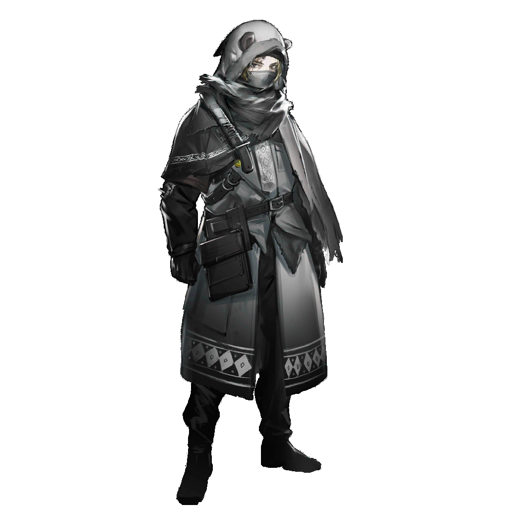

呢喃的歌谣
在河边，在山巅，树林沙沙响……村庄空无人，妈妈屋中望。
呢喃的歌谣
雪盖过脚印，风吹过墓园，只有羽兽在，响亮动听唱……
最后一点夕阳坠入地平线，整片大地再度隐入无边际的夜色中。
快要成型的天灾云遮蔽了星光与月光，也仿佛吞没了此间一切声音。
只余令人窒息的，近乎凝滞的风雪。

九
到时间了。
九
我们走。
战士停下嘴里的歌谣，拾起打磨了一半的刀，他们跟着领袖向前走去。
前面有生路吗？没法问，也不能想。他们所有人都将同一个问题牢牢按在心底。
今夜还会有多少人死去？

第一集团军士兵
发现目标，已清除。
第一集团军士兵
通知后续部队，清理部队对尸体无害化处理，继续压进。
第一集团军士兵
天灾环境影响通讯，当心点，派人直接去后方联络。
第一集团军士兵
嗯……？
带头的士兵停下脚步，直觉与经验告诉他这里的情况有些诡异。
明明没有风，周围的树却簌簌作响，枝头残存不多的枯叶纷纷飘落。
士兵感到疑惑，他伸手拂去面具上遮挡视线的枯叶，就在那一瞬间——
一片树叶割断了他的喉咙。

第一集团军士兵
敌袭！
第一集团军士兵
维持队形！火力压制，保护！
没有任何惊慌失措，几乎在第一个人死去的同一时间，剩余的部队已经重新列好阵势。
弩箭和法术对着人影掠过的方向疯狂倾泻，茂密的森林转眼间被扫荡出一片空地。
他们反应迅速、配合默契，但依然无法改变的是……
这一片山林并不是他们的主场。
“肃风摧折，凋零。”
“Суровый ветер,увядание.”
九
竟然是少见的十人队，这次来的部队实力不可小觑。

西尔卡
是第十师团的精锐部队……为了搜捕你们，斯韦特兰纳可真是下血本了。
九
看上去不仅是为了那个卡特斯，塔露拉他们肯定也让这位元帅吃了个大亏。

西尔卡
绝对超过你的想象。
西尔卡
但没什么好高兴的，因为后果就是现在她要把火气撒在你们身上。
九
已经差不多习惯给这个人收拾烂摊子了。

九
把他们的军服脱下来，收缴所有终端，然后……有劳你再证明一下自己的诚意了，西尔卡小姐。
九
你知道怎么跟他们对话，对吧？
西尔卡
……

西尔卡
（伪装过的声音）呼叫指挥处！我们在东路遭遇了猛烈攻击，请求支援！
西尔卡
（伪装过的声音）敌人数量极多，请求支援！
九
厉害。
九
之前只听说乌萨斯的战争术师会使用这样的源石技艺，今天亲眼见到，还真不一般。

西尔卡
我只是碰巧认识一个和战争术师有些渊源的人。
西尔卡
倒是你，炎国的将军都擅长这样的计谋？
九
将军？不不……我原来的工作还谈不上和战场有关。
九
呵，非要说的话，需要和别人斗心眼的场合另有其他。
西尔卡
你确定这样就有用？
九
疑兵之计，关键是要让对方失去对情报的判断能力。
九
也只有在这种时候，天灾是我们的朋友……我们也得和天灾抢时间。
九
无论指挥的那位到底相不相信，我们都只能随机应变了。
西尔卡
炎国人，总让人感觉捉摸不透……很难信任。
西尔卡
按你的计划，接下来该转移了？

九
嗯……稍等一下。
九伸手抚上身边树木的枝干，几朵零星的花就开在了枯树枝头。
西尔卡
古怪的源石技艺……你这是在干什么？
九
有人会看得懂的……如果他们能看到的话。
九
走，该转移了。
通讯那头的声音
……敌人向西南方向发起了多次突袭，七队、九队也与敌人进行了短暂交火。
通讯那头的声音
我们消灭了所有试图逃窜的感染者，但还没有发现任何卡特斯领袖的踪迹。
通讯那头的声音
……通讯……阻……汇报完毕。

雅罗米尔
天灾快成型了吗……还真不是时候啊。
雅罗米尔
这些暴徒也终于到了弹尽粮绝，再也等不下去的地步了。

雅罗米尔
差不多该收网了。
通讯那头的声音
……敌人试图从东路突围……猛烈攻击——请求支援。
通讯那头的声音
重复，请求支援。

雅罗米尔
……嗯？

集团军军官
雅罗米尔队长，敌人的重点突围方向似乎是东路。是不是需要加派兵力围堵？
雅罗米尔
冷静。
雅罗米尔
我们追了这伙感染者很长时间了，他们狡猾得像是田里的鼷兽，不会轻易把逃跑路线直接暴露出来的。
雅罗米尔
既然元帅指派你们配合我的行动，那就要相信我的判断。西南侧，靠近卡西米尔边境的位置，一定是他们首选的目的地。
雅罗米尔
不要理会这些小伎俩，依然把重火力压在南边，按计划推进。
集团军军官
按理来说，我们是不是应该故意留出让他们逃生的缺口，再慢慢追击——
雅罗米尔
元帅的命令，是要将这一伙在乌萨斯不断引发动乱的贼寇一网打尽，一个不留。
雅罗米尔
要像驱赶肉兽一样——不不……我甚至不该这么举例。肉兽是为了乌萨斯奉献了自己的益兽，和这些祸害不一样。
雅罗米尔
总之，我们绝不会采取任何可能给他们喘息机会的方法——消灭他们所有人，就在这里，现在。
雅罗米尔
按计划行动，我不会再重复第三遍。
通讯那头的声音
呼救！紧急呼救！
通讯那头的声音
东侧我军后方遭遇敌人袭击！敌人数量不明——

雅罗米尔
——什么？

雷德
……难对付。

整合运动战士
雷德老大，我们这边都搜查过了，没有发现九他们的踪迹。
雷德
好在我发现了……
雷德
这是九留下来的标记……就在不久前。
整合运动战士
太好了！他们还活着！
雷德
她用这些花告诉了我们她的作战计划。但他们的处境也十分危险，需要我们的帮助。
整合运动战士
雷德老大，我刚听到集团军的终端里说，正在调集更多人过来，咱们现在是不是先撤了？
雷德
……不。
雷德
我们要往包围圈里面走，再换个方向去冲击他们的包围圈。
雷德
留守根据地的同伴几乎没有作战人员，他们仅靠自己根本没有从集团军眼皮子底下逃出去的可能。
雷德
帮助他们扰乱敌军视线，试着找到防线的漏洞，这是唯一能让更多人活下来的机会。
整合运动战士
……行！我们听你的！
整合运动战士
我的命也算是九老大救的，就算是还给她也没什么大不了的！
雷德
要当心，这支军队和我们之前碰上的都不一样。
雷德
一会要动手的时候，你们还是尽量躲到旁边去。
整合运动战士
可是，雷德老大，你自己不要紧吗？你看上去血都要流干了！
雷德
是吗？我都没注意……别太担心，也不全是我的血。
雷德
我倒是觉得……现在的状态刚刚好。
轻佻的女性
听到了吗？那边的山头上好像热闹起来了。
轻佻的女性
你说，他们打起来的原因，会和我们捡到的这位大人有关吗？
寡言的女性
这不是什么值得高兴的事。
寡言的女性
战场上死去的都是我们的同胞，先知交给我们的任务，是保护同胞。
轻佻的女性
你还真是忠诚的信徒。不过，她可也说了很多遍，什么先知、智者、圣徒……这一类称号统统都要摒弃掉。
轻佻的女性
只要记住她的名字……
轻佻的女性
“希尔达”。
寡言的女性
我当然尊重她，这不用体现在一个称号上。
轻佻的女性
唉，要不是这位大人不愿意跟着我们离开，我们早就不用待在这块又冷又臭的地方了。
寡言的女性
我们不勉强任何一位同胞。我们只用做好准备，在他们迷途知返的时候，前去迎接。
寡言的女性
……迎接他们，进入天国。
轻佻的女性
欸，这就走了？上哪去？
寡言的女性
引开讨厌的裂兽，保护我们的“同胞”。
增援士兵
站住！
增援士兵
士兵！汇报情况！
第一集团军士兵？
你们总算到了！
第一集团军士兵？
那伙感染者二十分钟前就对我们的防线发起了猛烈进攻，我们好不容易才打退了他们，现在他们的大部队应该已经往北方去了！
增援士兵
北方？你确定吗？
第一集团军士兵？
绝对无误！
增援士兵
一队，跟我去北方追踪。
增援士兵
二队，分人去找，有消息说在东南方向见过疑似目标的行踪。
第一集团军士兵？
等等！敌军明明是往北方跑了，你们要去哪？
增援士兵
我们有自己的任务，与你无关。
增援士兵
带好你剩下的人，立刻归队。
望着士兵的背影消失在远处，西尔卡卸下了第一集团军的军装。

西尔卡
另外的任务？难道他们找到那个小兔子了？

西尔卡
还有战斗的声音……
西尔卡
难道真有这么巧？塔露拉，真让你们赶到了。
西尔卡
……先给九发信号吧。

恐慌的感染者
九！这是怎么了？集团军逼近了吗？
九
呵……我就知道。
九
打起精神，按计划行动。
九
我们可以准备离开这个地方了。
集团军士兵
呃——！

卡德尔
我还是不明白。
卡德尔
我们有很多人，为什么只能领到在这里埋伏几个落单的士兵的任务？

米拉娜
我们的任务是干扰集团军的战场情报传递，这是战术重要的一环。

卡德尔
可是我们有和集团军交手的经验，只要给我们一点自由行动的权限，甚至不要资源，我们一定能取得更多战果，哪怕只是多杀几个——
米拉娜
不要自作主张，卡德尔。
米拉娜
我们承诺过要配合塔露拉的指挥，战场上纪律比什么都重要。
卡德尔
哼……
卡德尔
……我没看错的话，你应该是从北方来的——曾经是矿工？
米拉娜
没错。

卡德尔
是布列斯克矿场的幸存者么？

米拉娜
不……我的队伍来自北原，但我依然为同胞的遭遇感到痛心。
卡德尔
……是啊，我们也是同样。
卡德尔
我知道矿上的人过的是什么样的日子，我见过。无非是死在那些刽子手的屠刀下，或是矿井里的区别，只是时间问题。
卡德尔
你我这样的人，通常会恨乌萨斯入骨。

米拉娜
……

卡德尔
骗不了人的，米拉娜。
卡德尔
我看得出来，想要复仇的人，她的眼睛是骗不了人的。

抱怨的战士
摸了半天，就翻出几个破手雷，集团军什么时候穷成这样了。
老成的战士
少说两句吧，这几个手雷也得上交。
抱怨的战士
……啐。
抱怨的战士
我不明白，卡德尔到底在想什么？我们会跟着他，本就是要趁着矿石病发作前，换几个集团军的人头，换一个赚一个。
抱怨的战士
现在呢？把我们送到了所谓的同胞手上，处处受人管。
老成的战士
你第一天认识卡德尔吗？他可最懂得忍受了。
老成的战士
在集团军的时候，他一个菲林，天天受乌萨斯的气，矿石病被曝光后又被殴打、嘲笑，最后丢进惩戒营，要他去前线“立功”。
老成的战士
他可一声不吭，前前后后咬牙忍了七年，摸了底，带着我一把火把那群欺负他的畜生送下了地狱。
抱怨的战士
你是说，他还在盘算什么大动作。
老成的战士
……我不知道，总觉得他还是想信任感染者同胞。
老成的战士
和图林相处没几天，卡德尔也开始讲那些不着调的未来，或许他是真想忍到所谓彻底胜利的那一天。
抱怨的战士
哼，他还是变了。
抱怨的战士
自从那个菲奥莉特来到我们队伍，他每天都要和她单独谈话，说是要商量什么战略谋划。
老成的战士
菲奥莉特？那个小女孩？
抱怨的战士
你居然不知道吗？
抱怨的战士
不知道从哪儿来的混混，也就卡德尔会把她当作什么体面的参谋。
老成的战士
……卡德尔，你到底……
他望着远处卡德尔的背影，不可置信地摇了摇头。
集团军通讯兵
队长！支援东侧的援军失去了联络，北侧也发现了大量试图逃离的感染者！
集团军通讯兵
我们在西侧的阵线也受到了冲击，没有余力支援其他队伍！
雅罗米尔
怎么回事……这些人明明已经被围困了这么久，他们早就该崩溃了，不可能还有这样的战斗力——
集团军军官
除非这些感染者有自己的援军。

雅罗米尔
我们根本没有收到什么援军的情报，这些人到底是从哪里冒出来的！
集团军军官
大概率是回援部队，才能这么迅速地切入战局。
雅罗米尔
是了……害死阿纳托利的凶手，摧毁泽尔格勒的凶手……一定是他们赶回来了。
集团军军官
天灾已经严重干扰了我们的通讯，我们没有办法及时掌握战场的动向。
集团军军官
可就算他们抛出各种烟雾弹，他们的大部队也只可能从一个方向逃生。
集团军军官
队长，请早做决定。
雅罗米尔
机会要来了……

雅罗米尔
哪怕是让炮手把整座山都炸一遍，我也要把他们全部杀光——
集团军士兵
队长！我们的主力部队，南侧队伍的后方，被一个强大的术师袭击了！
雅罗米尔
——！
雅罗米尔
该死……！
第一集团军士兵
都守住！不许后退！
第一集团军士兵
就算那是个恐怖的怪物，也只是独自行动！
第一集团军士兵
不许退缩！把所有炮口对准她！
第一集团军士兵
为了乌萨斯——

塔露拉
……
塔露拉
好好看清楚，站在你们面前的不是怪物……是和你们一样的人。

整合运动术师
塔露拉！敌人火力太强了，我们恐怕抵抗不了太久！

塔露拉
站在我的身后，我会用火掩护你们。
塔露拉
别害怕，他们只是掌握着更强大的武器的暴徒，没什么好怕的。
塔露拉
不用战胜他们，拖住他们，就是为其他同伴争取时间——
塔露拉
呃——
雅罗米尔
逮到你了。
雅罗米尔
……感染者的领袖。
塔露拉
集团军的将领吗？能逼你出来，看上去我们的战术已经奏效了。
雅罗米尔
你们果然就是摧毁了泽尔格勒的人……多么卑鄙。你们明知道乌萨斯现在有多么危急，竟然还摧毁了无数人最后的希望。
雅罗米尔
还会有多少人因为你们的暴行送命，你就一点都不觉得可耻吗？
塔露拉
我们毁了泽尔格勒？是谁让你这样相信？
雅罗米尔
我没兴趣听你们的狡辩，我只知道……
雅罗米尔
你们杀死了我的朋友。

塔露拉
——！
塔露拉
强化身体的源石技艺？这种程度，你这是在自杀——
雅罗米尔
害怕了？
雅罗米尔
投降吧，我可以给你一个对战士而言体面的结局。不然我就先在这里杀了你，然后用你的首级去劝降剩下的人。
塔露拉
呵，你大可试试——
雅罗米尔
等等……这样的火，而且是白发德拉克——

雅罗米尔
你是……那位科西切公爵的继承人？